『ゼロからのOS自作入門』写経した
通称『みかん本』。やったことはこのリポジトリのコミットタグをはじめから辿ってひたすら写経しただけ。
OS自作界隈を盛り上げようとしている著者には申し訳ないが、おれは別にOS自作そのものに興味があるわけではなく、コンピュータについてなにもわかっていない状況を打破したいという思いでこの本を購入した。
全体像を大雑把に理解しながら学習したため、CPUなどの細かい仕様はスルー気味。
以下、雑なメモ。
1章
手始めにUEFI BIOSから起動されるサンプルプログラムを作成する。バイナリエディタで機械語を直接.efiファイルに打ち込み、できあがるのはお馴染みHello, world!コード。
おれの場合はWSL2のUbuntu 20.04でQEMUを使用した。うまくいけば以下のように真っ黒画面に文字列が表示される。
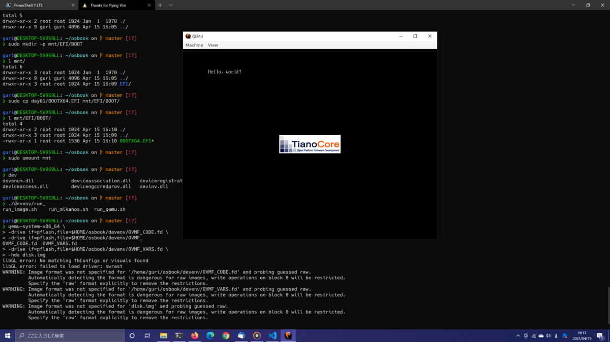
2章
1章と同じくHello, world!コードを作成するが、違いはUEFI BIOS上で動作するアプリ開発キットのEDK2を使用すること。ブートローダ作成の練習となる。
ホストOS（Windows）のscoopでPythonをインストールしてたら、$HOME/edk2/edksetup.shを実行した際になぜかscoopのほうのPythonパスを環境変数に設定するのでハマった記憶がある。scoopのPythonをアンインストールして環境変数を手動でリセットしてから$HOME/edk2/edksetup.shを再実行することで対処した。
3章
OSのコア部分であるカーネルを作成していく。それに合わせ、作成したカーネルを起動するよう2章のブートローダを本格的に修正。
nand2tetrisを演習していたので、最初にでてくるアセンブリやレジスタの話題にはすんなりついていけた。ていうか、普通のCPUやレジスタってnand2tetrisのものよりずいぶん高機能だ。当然っちゃ当然か。
あとは適当に画面のピクセルをいじったり。
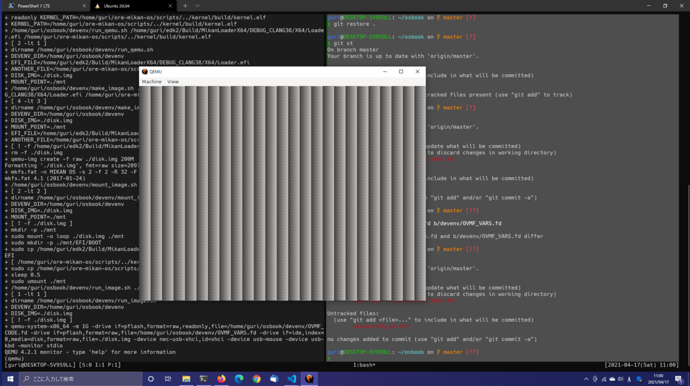
4章
ピクセル描画の機能をピクセルフォーマットを考慮するように修正していく。メモリ上のピクセル位置を計算する部分とかピクセルの色情報を弄る部分とか、業務でOpenCVをバリバリ使っていたこともあったので若干なつかしい気分。
それより、配置newってなんなんだ。やはりC++はやばい。
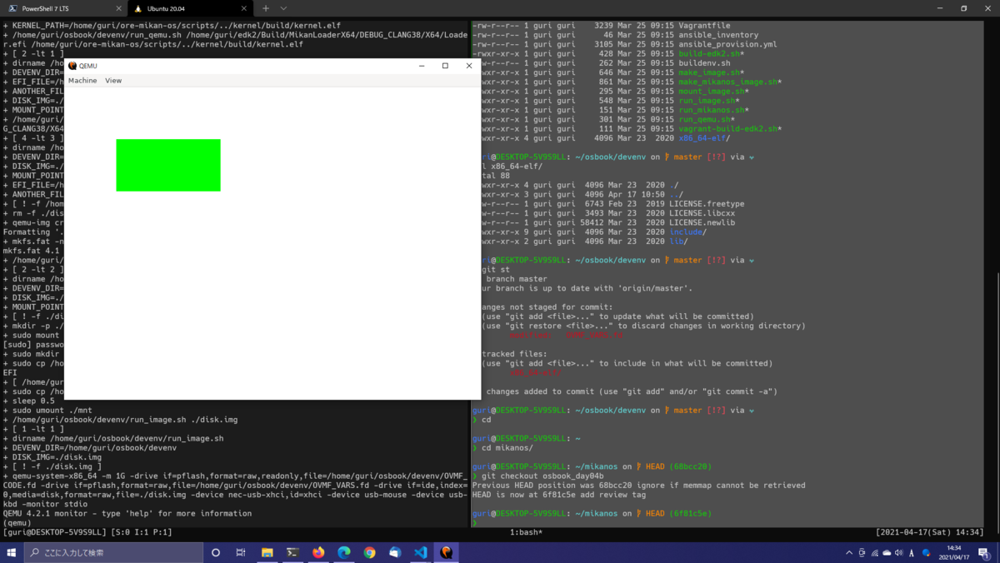
5章
フォントをカーネルバイナリに埋め込んだり、コンソール機能をモジュール化したり。
ここまではビルド成果物をソースコードと同じディレクトリではなく専用の別ディレクトリに出力するようMakefileを改造していたが、別ディレクトリに配置されたオブジェクトファイルのシンボルをcppソースコードから読み込む方法がわからず、結局本書と同じようなMakefileに修正した。clangやld.lldのオプションでシンボル探索パスを追加すればいけそうなもんだが、コマンドオプションが大量かつ英語わからない弱者なので諦めたりした。
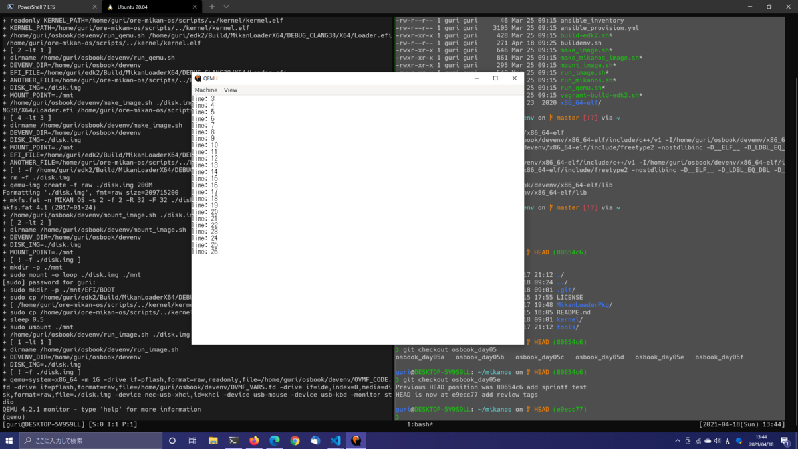
6章
デスクトップ画面やマウスカーソルの描画、USBドライバを使用してカーソルの制御など、見た目が一気にOSに近づいていく。USBドライバは巨大すぎるので写経すらせずディレクトリごとコピペしてしまった。
IOアドレス空間を読み書きするためにとうとうアセンブリコードを書かされたりと、いよいよというところまで来ている。
xHCI（USB3.0のホストコントローラ仕様）はクソむずい。全体の外観だけでも知っておくとだいぶ違うのだろうが、そこらへん調べるのはさぼった。この章あたりからいろんな規格の仕様などがバンバン出てきはじめるので、無知なほど単純に難易度が上がる。
最初、マウスカーソルが動かなかったのだが、写経したつもりだったコードでカーソル描画の位置を初期値で固定したまんまというとんでもなくあほな理由で約12時間が調査のために溶けた。泣きたい。
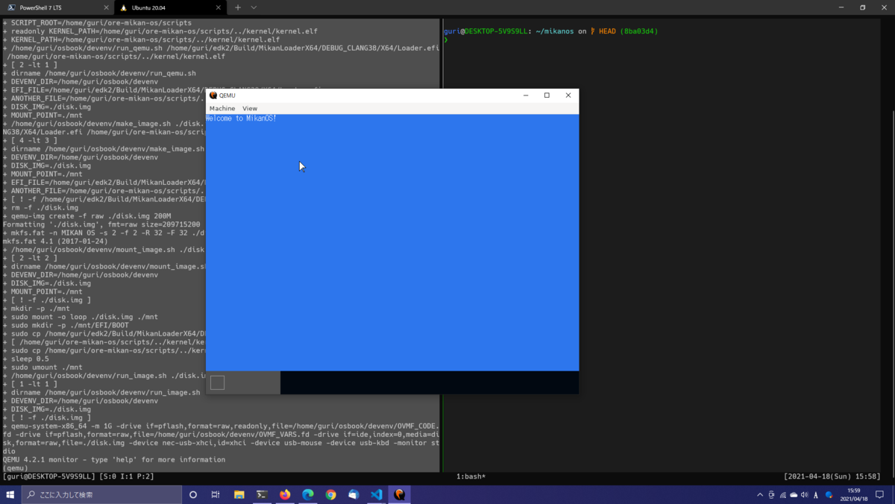
7章
マウスカーソル描画を前章のポーリング方式（カーネルが逐一イベント通知を問い合わせる）から割り込み方式（ハードウェアがイベント通知をカーネルに投げる）に変更。
筆者は章末で「退屈な章」と書いているが、個人的にはこれまでの章の中で一番おもしろかった。たぶん、おれがコンピュータの裏側で動いているアルゴリズムなんかが好きなことが原因だ。頭悪い癖にな。
8章
メモリ管理をカーネルに組み込む。mamd2tetrisでは本書のようなページング機能とかはなく、生アドレスをひたすら弄くり回していた（仮想マシンだから生アドレスもクソもねえけど）。
ユーザー定義リテラルなんて文法初めて知った。しかもC++11からとっくにあるらしい。C++やばすぎる。
9章
グラフィック描画の修正。マウスカーソルの軌跡を背景色に塗りつぶしていたのを、レイヤによる重ね合わせ処理によって改善していく。前章で追加したメモリ管理機能もさっそく使って動的メモリ割当する。
重ね合わせ処理によってあらたな問題（画面のちらつき）や処理速度の低下が発生するが、それらも部分描画などのよりよいアルゴリズムで修正していく。
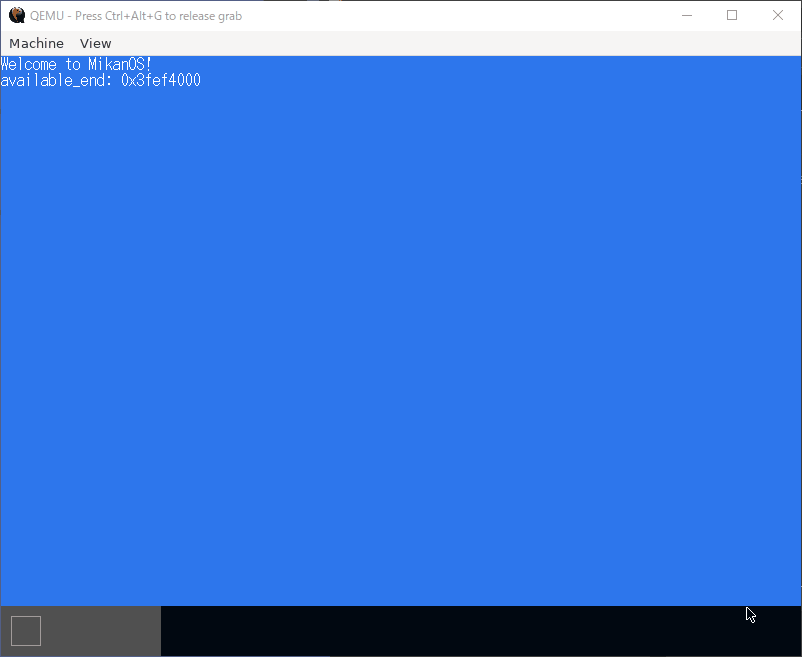
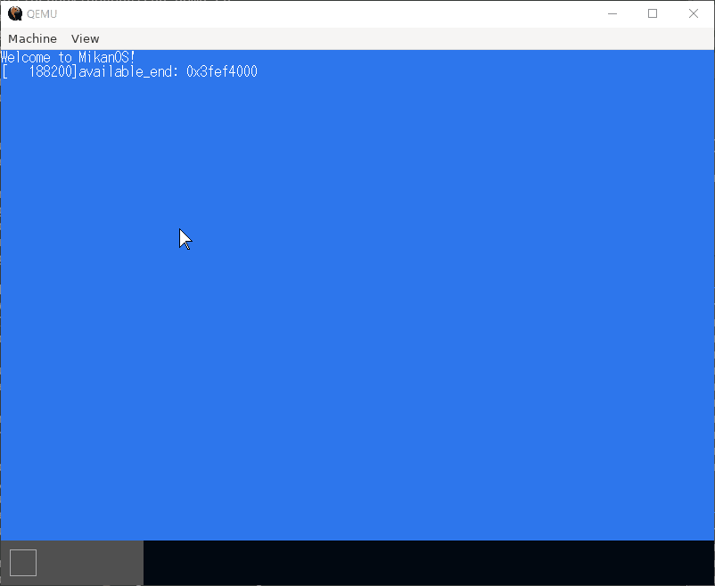
10章
とうとうウィンドウを描画する。9章と同様に、描画アルゴリズムを少しずつ改善していってチラツキなどを排除する。
ここにきてダブルバッファリング手法が導入される。すげー話がそれるが、MFCで画面のチラツキを抑制するのは馬鹿みたいに難しかった。それにくらべてWinFormsの簡単さときたら。DoubleBufferedプロパティをtrueにしたらそれで終わりなんだもの。
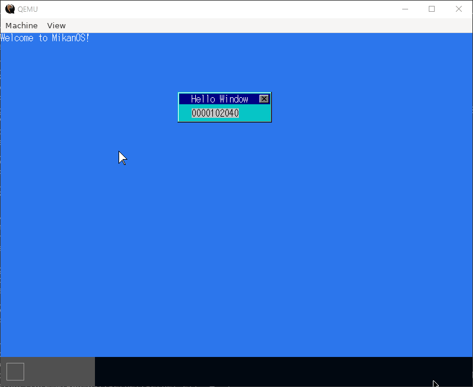
11章
9章で作成したLocal APICタイマを割り込みでカウントさせるようにし、さらに複数のタイマを生成できるようにも改造する。
Local APICはCPU内部の割り込みコントローラで、Local APICタイマはCPUコア1つにつき1つ搭載されている。そして名前がややこしいが、電源管理に使用されるACPI PMタイマを利用してLocal APICタイマの周期を測定する。
ちなみに実装はこの章では完結しない。また、ACPI PMタイマはRSDP（Root System Descriptor Pointer）からいくつかのテーブルを経由して取得する。
12章
前半は11章のやり残し。Local APICタイマの周波数を測定し、1秒毎にタイムアウトさせるようにする。
後半からはキーボード入力を割り込み制御するコードを書く。キーボードはUSB接続されていることを前提とし、マウスのときと同じくUSBドライバを使って、送信されてきたキーコードをASCii文字に変換しテキストボックスに表示する。
また、実装したタイマ機能をさっそく活用し、テキストボックス内のカーソルを一定時間間隔で点滅させる機能までを実装する。
現在おれが使用しているキーボードは英字配列のものだが、キーは正しく入力されている。日本語配列だとどうなるかは検証していない。
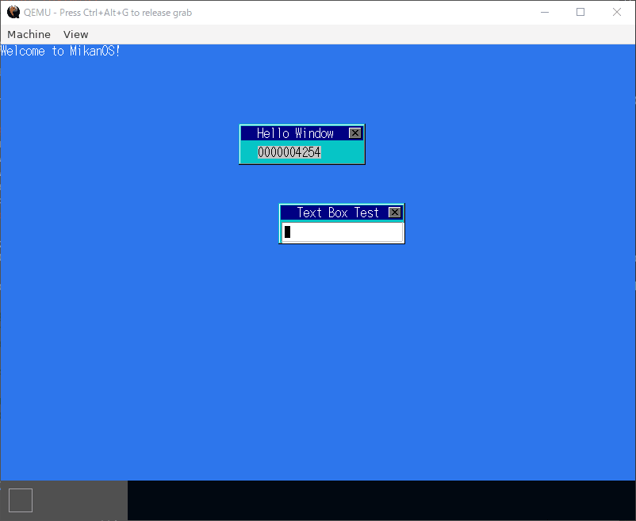
13章
マルチタスク機能を実装する。その際、複数のコンテキスト（各タスクのレジスタなどの状況）を複数のCPUコアで同時に動かす並列処理ではなく（クソ難しいらしいので）、1つのCPUコアで複数のコンテキストを切り替えながら動かす並行処理のみで実装する。また、タスク切り替えのタイミングは割り込みで通知させる。
コンテキストスイッチの実装はアセンブリで行っている。正直ほとんど理解できていないが、雑に言えば各レジスタの値をどこかのメモリアドレスにひとまとめに退避してるだけなので、コールスタックのやり方とそう変わらない印象を受けた。
いまのところ、各タスクは一律のCPU時間で順番に持ち回すラウンドロビン方式（であってる？）によってスケジューリングする。
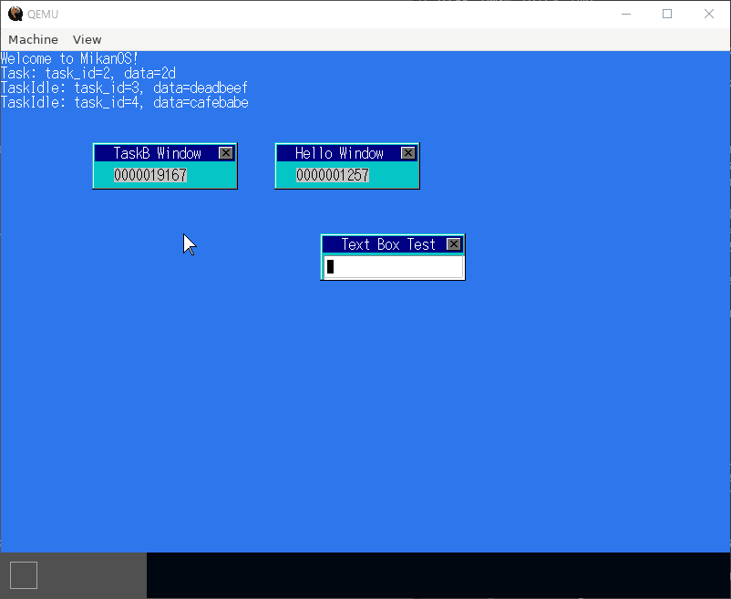
14章
13章の続き。ラウンドロビン方式はそのままにタスクの待機列を優先度毎に階層化して、優先度の高いものがスリープしない限りより低い優先度の待機列は動かさないというスケジューリングを採用する。
おもしろいけど頭パンクしそう。あとそろそろグローバルなポインタ変数がきつい。
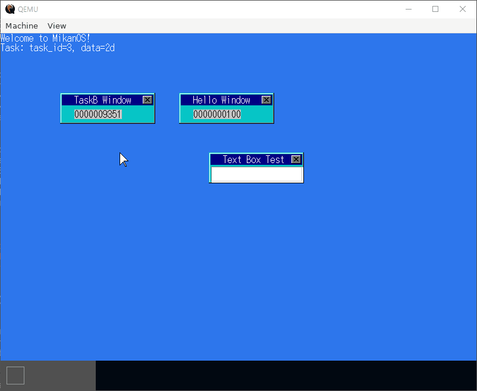
15章
ついにターミナルを実装していく。とはいえこの章ではまだガワを用意するに留まる。
割り込み制御のコードがスパゲティ化するのを防ぐためレイヤ描画処理をメインタスクに一任するよう修正し、またアクティブウィンドウの仕組みも導入しておく。
16章
ターミナルがキー入力を受付けられるようにし、いくつかのコマンドとコマンド履歴を実装する。
筆者も書いている通り、ターミナルが実現されたことで一気にOSらしさが増してテンションがぶちあがる。
17章
ファイルシステムを導入。MikanOSではFAT32を採用する。ファイルシステムがなんもわからず、初めて聞く専門用語が非常に多い。
ファイル一覧を取得する方法としては、ブロックデバイスのドライバを作成するのではなく（クソ大変らしいので）、UEFI BIOSのBlock I/O Protocolを利用しブートローダにメモリ上に展開させる。メモリにはディレクトリエントリが配列状に並んでいるため、これを処理することでlsコマンドを実装できる。
18章
17章からの応用。ファイルの内容を読み込めるようにし、catコマンドを実装する。
また、ファイル読み込みが可能になったことで、ボリュームイメージに存在する、カーネル本体とは別のファイルをアプリとして実行可能になる。
実行可能ファイルのソースコードはアセンブリでもC++コードでもいい。アプリを呼び出すカーネル側では、アプリがフラットバイナリかELF形式かでエントリーポイントのアドレス計算式を分岐させる。
ここではRPN電卓アプリを作成。ただし、アプリはまだ正常には動作しない。アプリ側から見えている仮想アドレスを正しい物理アドレスに変換できているのはエントリーポイントだけだからだ。
19章
8章で出てきたページング機能を深堀りし、仮想アドレスと物理アドレスの変換が適切になされるようにする。
ここで論理アドレスと仮想アドレスの違いがわからないことに気づく。軽く調べた感じでは同じものという認識でよさそう？
途中一週間程とある同人ゲームにドンバマリしてたら内容が頭からすっ飛んだ。
20章
アプリからOSカーネルに命令できるようにする。その際、セキュリティの観点からOSカーネルの関数そのものではなくシステムコールを使用させる。それにはセグメント記述子でCPUの実行権限レベルをアプリ用に設定したり、OSとアプリが使用するメモリ領域を分けたりする。
システムコールの仕組みを実装する手順は以下の通り。
- システムコールを作成する
- 作成したシステムコールを、システムコール専用の関数ポインタテーブルに登録
- 上記の関数ポインタテーブルからシステムコール番号を使用して所望のシステムコールを参照し実行する、という関数（システムコールエントリ）を作成
syscall命令で呼び出されるよう、システムコールエントリをIA32_LSTARレジスタに登録syscall、sysretの呼び出し前後でコンテキストの保存と復帰のために各レジスタなどをなんやかんやする。
はてしなく難しい章。ここで実装するコードとかもうほとんど理解できていない。
21章
色々なシステムコールを作成して文字列表示やアプリを終了可能にしたりする。
難しい部分は20章でほぼ終わっているから楽だった。てかアセンブリにもマクロ機能ってあるんかよ。
22章
さらにシステムコールを追加。タイマ値の取得、直線の描画、アプリ側からイベント受信、ウィンドウのクローズなどやれることが増える割にコードはかんたん（アセンブリを除く）。
アプリ側はOSから送信されるイベントを、いわゆるイベントループで待機する。ポーリング方式とは違い、待機している間はOS側がアプリのタスクをスリープさせる実装なのでCPUに負荷がかかることはない。コード見てたらまたもやMFCのトラウマがぶり返した。
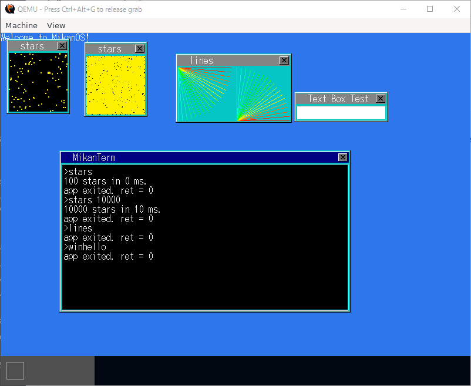
23章
またまたシステムコールを追加。マウスクリック、タイマー生成、キーコードの取得などに対応することでよりインタラクティブな動きが可能となる。
立方体アニメーションアプリの実装が全く理解できなくて悔しい。鼻くそほじりながら数学を楽に理解できるようになりてえ。
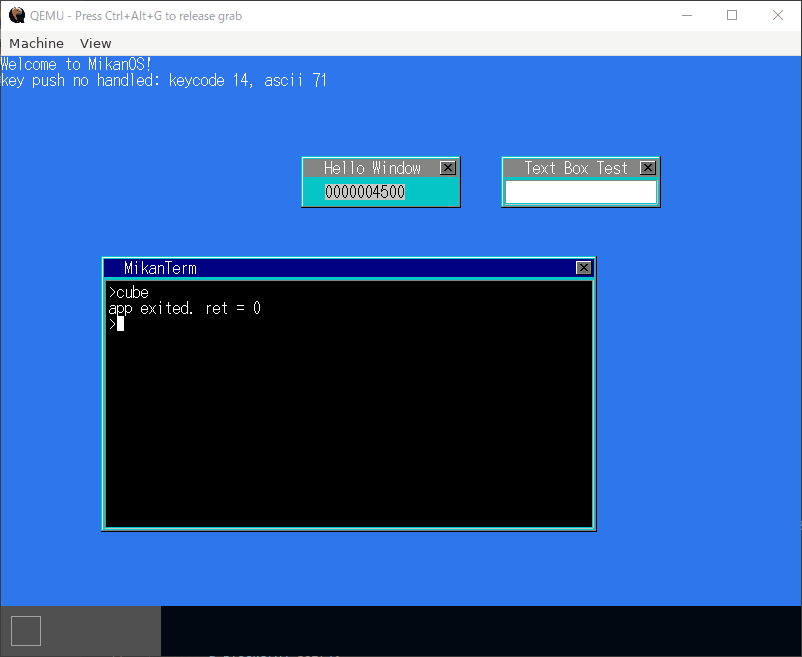
24章
複数のアプリを同時に実行できるようにするため、アプリ毎に階層ページング構造をもたせ、タスクが切り替わるたびにCPUが参照するページング構造も切り替えさせる。コードの修正量が少なくエレガントでクソびびった。
それと、ターミナルを新規で立ち上げることなくアプリを実行するnotermコマンドを実装（実際はターミナルウィンドウを非表示にしているだけ）。
また、CPU例外を起こしたアプリは強制終了させ、OSカーネル全体がパニックしないようにする。
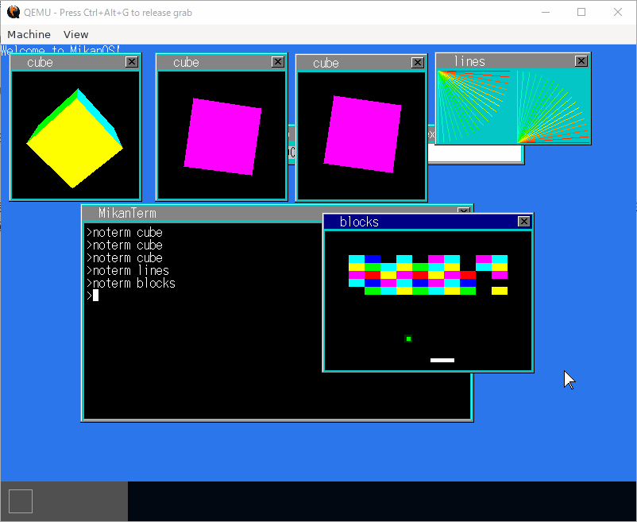
25章
アプリから楽にファイルにアクセスできるよう、OS側で抽象化されたファイルシステムを提供する。それにはタスク毎にファイルエントリの配列を持たせ、タスクがファイルを開く際にファイルディスクリプタという正の整数値を発行。ファイルディスクリプタはその配列へのインデックスとなる。ファイル先頭からのオフセット計算とか細かい部分はOSが担当。
この章では読み込みのみに対応。ついでに正規表現コマンドも実装する。
26章
標準入出力とアプリからのファイル書き込み機能を実装。
標準入出力の仕組みは思っていた以上にシンプルで、ファイルディスクリプタ番号0, 1, 2が指定されたときにキーボードからの入力を待ち受けたりターミナルへ印字するだけだった。
ファイル書き込みのコードは読み込みのものとさほど変わらない。cpコマンドも実装。
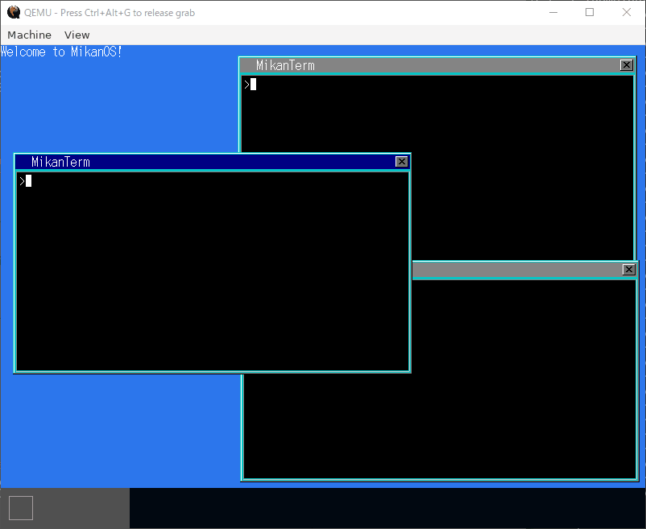
27章
デマンドページング、メモリマップドファイル（ファイルマッピング）、コピーオンライトを実装。
デマンドページングとは、事前に確保していたページの範囲のうち、初めてページにアクセスされたときに物理フレームを割り当てる仕組み。そうすることで、必要以上に物理メモリが確保されるのを防ぐことが可能。
メモリマップドファイルはファイルの内容を仮想アドレスの連続した領域に対応付ける仕組み。これを導入することで、ファイル操作の際にストレージへの頻繁なアクセスを回避できる（MikanOSではカーネル起動の際にファイルをメモリ上にすべて展開するので恩恵を感じにくいが）。
コピーオンライトは、例えば同じアプリを複数のタスクで実行する場合、そのアプリのデータが読み込まれたメモリをタスク間で共有させ、グローバル変数などを書き換える際に該当部分だけ別のメモリ領域にコピーさせる仕組み。
上記の3つとも、試して理解 Linuxのしくみにて解説されていたのをいまさら思い出した。たしか去年の頭に読んだわ。もう全然覚えてねー。
割り込み、階層ページング構造、ファイルシステムなど今までに実装してきた技術の応用かつコードも複雑なので、超むずい。
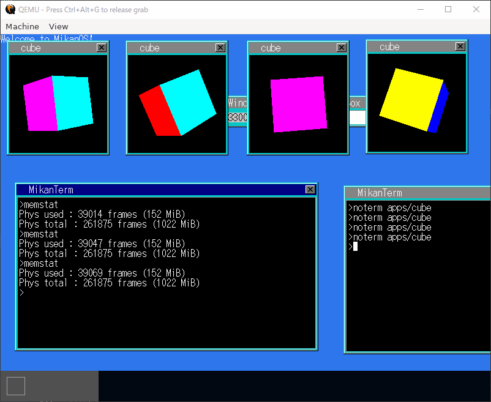
28章
UnicodeのUTF-8を採用して日本語表示できるようにする。実は文字コードの仕組みとかASCII以外よくわかっていないザコだったが、まさか本書である程度学習できるとは思わなかった。いや予想できてしかるべきか。本書の一番最初のサンプル画像に思い切り日本語表示されてたし。
後半では標準出力をターミナル以外に接続するリダイレクト機能を実装する（標準入力のほうは実装しない）。コマンドに>が含まれていたら出力先を指定ファイルに切り替えるだけなので、すげえ簡単。
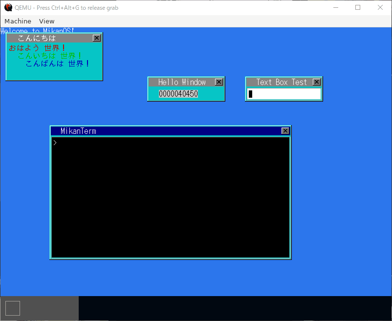
29章
パイプによるアプリ間通信を実装。|の前後で別々のコマンドを並べることにより、あるアプリの標準出力を別のアプリの標準入力に繋げることができるようになる。
|右側のコマンド用にもう一つ別のタスクを起動させ、2つのタスクを並行で実行させる。もちろん、それぞれの標準入出力はパイプ用に切替えておく。データの送信・受信には割り込みを利用する。アセンブリは書かされないが、マルチタスクの本領発揮って感じで難しい。
実装はしないが、共有メモリの解説もなされる。仕組み自体はコピーオンライトと似ており、物理フレームを仮想ページに書き込み許可でマップすることで、複数のタスク間でデータを共有可能となるそうな。
また話がそれるが、MFCで作られた複数のアプリケーションを連携して動作させる、というプロジェクトに共有メモリがやたらと登場していたのを思い出した。周期的に共有メモリを読み書きしなきゃいけないわデータ競合発生するわで、当時は脳みそがしぼむような錯覚に襲われた。
30章
おまけのような章。テキストビューワーと画像ビューワーを作る。見た目がずいぶんリッチになる。
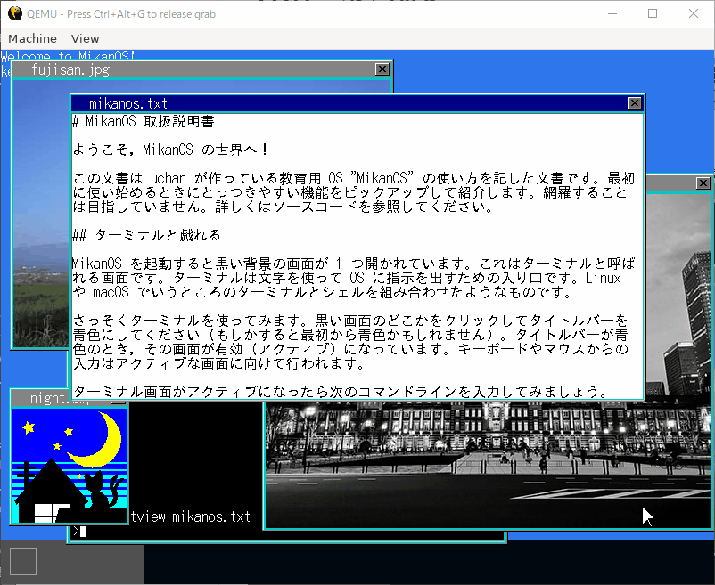
まとめ
nand2tetrisで雑に扱われていたOS解説の部分を補完してくれる書籍。主に以下の事項の詳細を新たに学ぶことができた。
- 割り込み
- グラフィック描画の応用（レイヤ、部分的描画、ダブルバッファリングなど）
- マルチタスク
- ファイルシステム（FAT32、ファイルディスクリプタ、標準入出力など）
- 階層ページング構造
- カーネルからのアプリケーション呼び出し
- システムコール
- デマンドページング
- メモリマップドファイル
- コピーオンライト
- Unicode
- アプリ間通信
本書に対する文句ではないが、CPUがnand2tetrisのものと比べて高機能な分それを制御するためのコードもより複雑になっており、とくにコンテキストの復元などで各レジスタ値の保存・復帰する処理や、スタックをOS・アプリ間で切替えたりする部分なんかは頭が破裂する。nand2tetrisのアセンブリの世界はすごく牧歌的だったんだなと今にして思う。あちらはシングルタスクっていうのもでかい。
てかレジスタ名が分かりづらすぎやしねえか。引数を格納するレジスタとか連番でよかったんちゃうんかと。まあここらへんはたぶん、歴史的事情ってやつなんだろう。
で、コンピュータについての理解が少しは深まりましたか？
それどころか学べば学ぶほど自分がカスだという事実に向き合わざるをえないんすが。